An output-sensitive algorithm for persistence
\dagger Khoury College of Computer Sciences, Northeastern University
CompPers24 - Austria
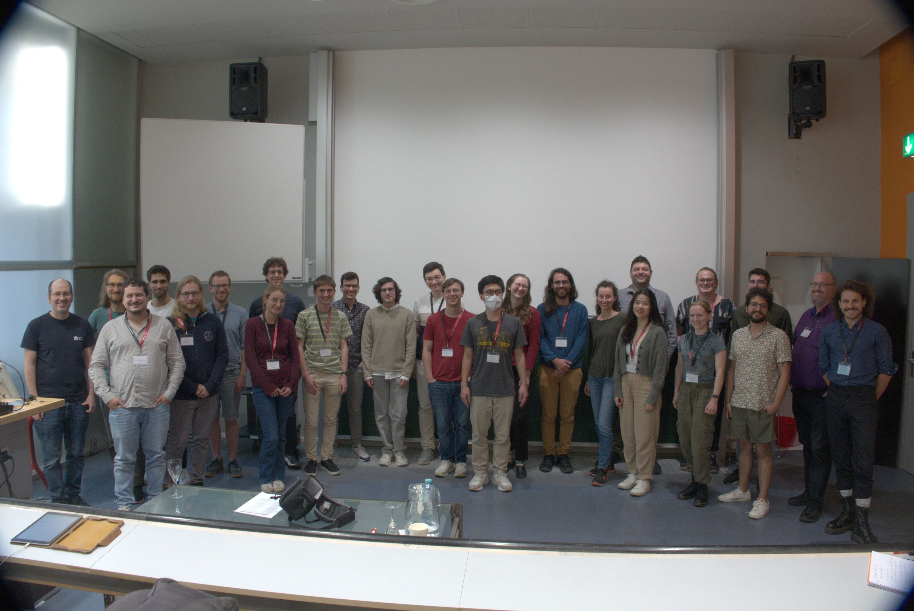Overview
(Chen and Kerber 2011) introduced a rank-based algorithm for computing persistence
The algorithms main attractions are:
- It can be used to compute only homology classes with persistence at least \Gamma
Overview
(Chen and Kerber 2011) introduced a rank-based algorithm for computing persistence
The algorithms main attractions are:
- It can be used to compute only homology classes with persistence at least \Gamma
- It is comprised entirely of ‘black-boxed’ rank / matvec computations
Overview
(Chen and Kerber 2011) introduced a rank-based algorithm for computing persistence
The algorithms main attractions are:
- It can be used to compute only homology classes with persistence at least \Gamma
- It is comprised entirely of ‘black-boxed’ rank / matvec computations
- Its runtime is sensitive to the size of the output1 (# of persistent pairs)
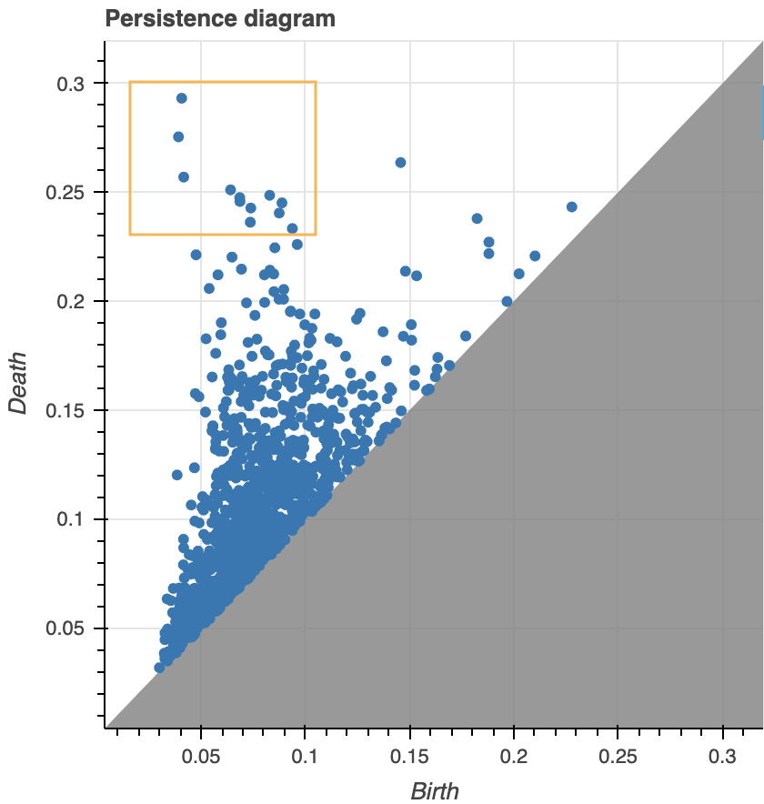
Overview
(Chen and Kerber 2011) introduced a rank-based algorithm for computing persistence
The algorithms main attractions are:
- It can be used to compute only homology classes with persistence at least \Gamma
- It is comprised entirely of ‘black-boxed’ rank / matvec computations
- Its runtime is sensitive to the size of the output
- Its space complexity is \approx linear in the size of the complex
If X \subset \mathbb{R}^{n \times d}, computing \mathrm{dgm}_p(K) takes1 O\left({n \choose p+2}^3\right) \text{ time } + O\left({n \choose p+2}^2\right) \text{ space } when p > 0. The improvement in space: O\left({n \choose p+2}\right) \text{ space }
Overview - The Algorithm
- Characterize \mu_p as a rank computation on boundary (sub)matrices
\mu_p^R(K, f) = \mathrm{rk}(\partial_{p+1}^{j + 1, k}) - \mathrm{rk}(\partial_{p+1}^{i + 1, k}) - \mathrm{rk}(\partial_{p+1}^{j + 1, l}) + \mathrm{rk}(\partial_{p+1}^{i + 1, l})
- Express pivot condition as a recurrence relation
\mathrm{low}_R(j) = i \; \Leftrightarrow \; \exists n_{[i,i]} \in \mathcal{T}_m^{[k,l]} \text{ w/ } \mu(\mathcal{n}_{[i,i]}) = 1
- Divide-and-conquer (in the index persistence plane)
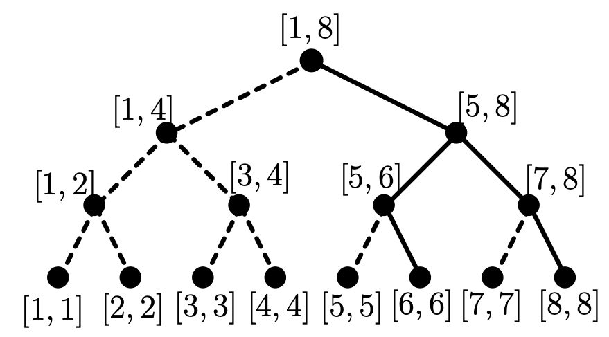
Notation
Computing persistence requires a family \{K_i\}_{i\in I} of simplicial complexes indexed by a totally ordered set I, such that:
- (filtered) for any i,j \in I, we have i < j \implies K_i \subseteq K_j
- (simplexwise) K_j \setminus K_i = \{ \sigma_j \} if j = \mathrm{succ}(i)
Any filtration \to simplexwise via condensing, refining, and reindexing maps (Bauer 2021)
Example: Define (K, f) where f: K \to I satisfies f(\tau) \leq f(\sigma) whenever \tau \subseteq \sigma. Then, for any pair \sigma, \sigma' \in K with \sigma \neq \sigma', order I by:
- f(\sigma) \leq f(\sigma')
- \mathrm{dim}(\sigma) \leq \mathrm{dim}(\sigma')
- N(\sigma) < N(\sigma'), where N : K_p \to [{n \choose p+1}] is a fixed bijection
Example
Common choices for I include [m] = \{1, \dots, m\} and \mathbb{R}
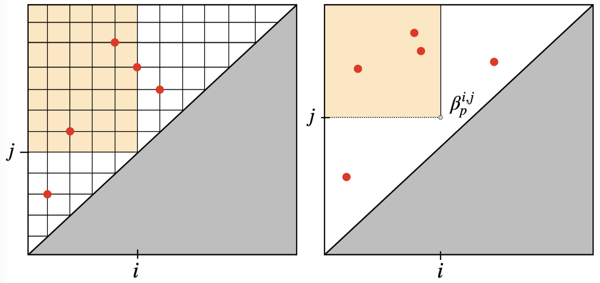When \mathrm{dgm}(K, \mathbb{F}) is defined over [m], we call it index persistence
Background: Reduction
Decomposition Invariants (Edelsbrunner and Harer 2008)
- R = \partial V where \partial is the filtered boundary matrix of (K,f)
- V is full-rank upper-triangular
- R is reduced: if \mathrm{col}_i(R) \neq 0 and \mathrm{col}_j(R) \neq 0, then \mathrm{low}_R(i) \neq \mathrm{low}_R(j)
Persistence Diagrams
Persistence diagrams are often defined in terms of their Betti numbers:
\mathrm{dgm}_p(\, K, \, f \, ) \triangleq \{ \, ( \, i, j \,) \in \Delta_+ : \mu_p^{i,j} \neq 0 \, \} \; \cup \; \Delta
\textstyle \mu_p^{i,j} = \left(\beta_p^{i,j{\small -}1} - \beta_p^{i,j} \right) - \left(\beta_p^{i{\small -}1,j{\small -}1} - \beta_p^{i{\small -}1,j} \right), \quad \beta_p^{k,l} = \sum\limits_{i \leq k} \sum\limits_{j > l} \mu_p^{i,j}
Theorem(Dey and Wang 2022): Let \partial \in \mathbb{F}^{m \times m} be a boundary matrix for simplexwise filtration (K,f) with decomposition R = \partial V. Then the simplices \sigma_i, \sigma_j \in K forms a persistent pair (f(\sigma_i), f(\sigma_j)) if and only if \mathrm{low}_R(j) = i
- Unpaired simplices \sigma_i \in K form essential pairs (f(\sigma_i), \infty)
- Though the pairing is unique, the decomposition R = \partial V is a not
- In the index persistence case, f: K \to [m], thus f(\sigma_i) = i
Pairing Uniqueness Lemma
Proposition (Cohen-Steiner, Edelsbrunner, and Morozov 2006): For any simplexwise filtration (K, f), if R = \partial V is a decomposition of its boundary matrix \partial \in \mathbb{F}^{m \times m} obtained using left-to-right column operations, then:
\mathrm{low}_R(j) = i \; \Leftrightarrow \; \mathrm{rk}(\partial^{i,j}) - \mathrm{rk}(\partial^{i+1,j}) + \mathrm{rk}(\partial^{i+1,j-1}) - \mathrm{rk}(\partial^{i,j-1}) \neq 0
where \partial^{i,j} \equiv “lower-left” submatrix given by rows [i,m] and columns [1, j].
Pairing Uniqueness (single)
If (\sigma_i,\sigma_j) \in \mathrm{dgm}(K, \mathbb{F}), then \mathrm{low}_R(j) = i \; (\,R[i,j] \neq 0 \,)
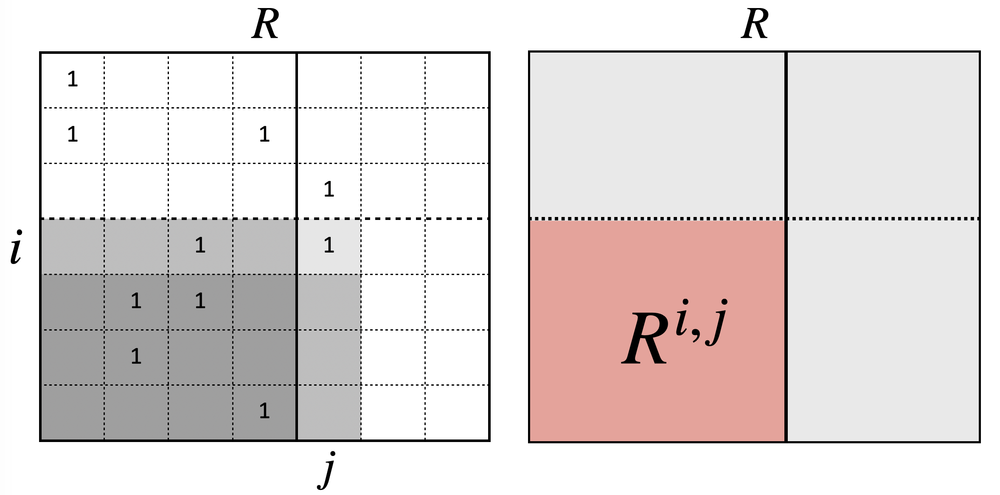R[i,j] \neq 0 \; \leftrightarrow \; \mathrm{rk}(\partial^{i,j}) - \mathrm{rk}(\partial^{i+1,j}) + \mathrm{rk}(\partial^{i+1,j-1}) - \mathrm{rk}(\partial^{i,j-1}) \neq 0
Pairing Uniqueness (general)
For any box R = [i,j] \times [k,l] \subset \Delta_+ in the index upper-left halfplane \Delta_+:
\mu_p^R(K, f) = \mathrm{rank}(\partial_{p+1}^{j + 1, k}) - \mathrm{rank}(\partial_{p+1}^{i + 1, k}) - \mathrm{rank}(\partial_{p+1}^{j + 1, l}) + \mathrm{rank}(\partial_{p+1}^{i + 1, l})
\beta_p^{i,j}(K,f)^{\ast} = \mathrm{rank}(C_p(K_i)) - \mathrm{rank}(\partial_p^{1,i}) - \mathrm{rank}(\partial_{p+1 }^{1,j}) + \mathrm{rank}(\partial_{p+1}^{i + 1, j} )
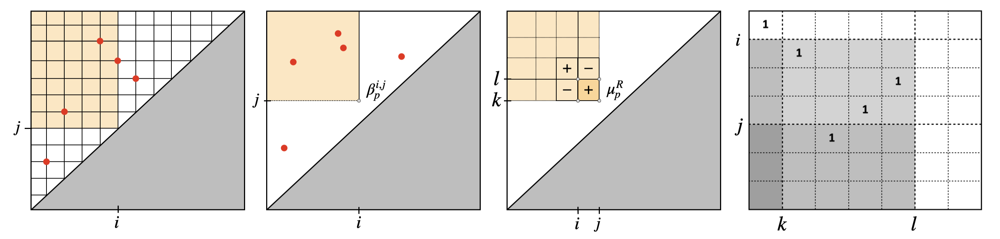
Pairing Uniqueness (interpretation)
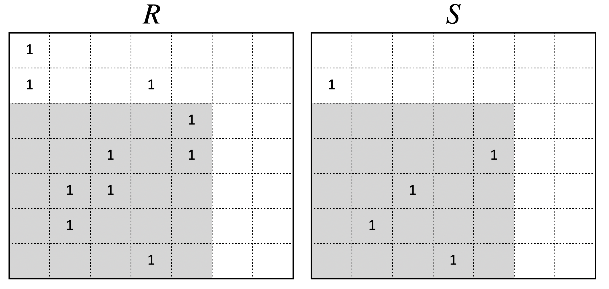Chen’s and Kerbers idea: Let S_{ij} = 1 if \mathrm{low}_R(j) = i and 0 otherwise.
Then \# S^{i,j} = \mathrm{rank}(R^{i,j}) for all i < j, and \mu_p^R is like “counting” non-zeros in S
The Key Lemma
Lemma (Dey and Wang 2022): Given a filtration (K, f) of size m = \lvert K \rvert and decomposition R = \partial V, for any pair 1 \leq i \leq j \leq m we have:
\mathrm{rk}(R^{i,j}) = \mathrm{rk}(\partial^{i,j})
where (\ast)^{i,j} \equiv “lower-left” submatrix given by columns [1, j] and rows [i,m].
- This also holds for restrictions R_p^{i,j} and \partial_p^{i,j}
- Constructing R requires O(m^3) time via reduction
- Constructing \partial^{i,j} requires O(j-i) time for constant p \geq 0, and satisfies: \mathrm{nnz}(\partial) = O(m \log m)^\ast \quad \quad (\text{sparsity of } \partial)
The Key Lemma
Pairing uniqueness lemma1 \implies \; \mathrm{rank}(R^{i,j}) = \mathrm{rank}(\partial^{i,j})
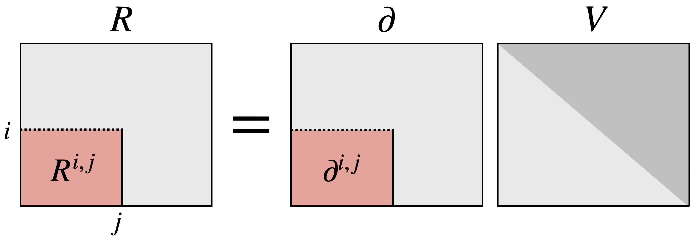
Corollary (Bauer et al. 2022): Any algorithm that preserves the ranks of the submatrices \partial^{i,j} for all i,j \in \{ 1, \dots, n \} is a valid barcode algorithm.
Towards a new algorithm
Corollary(Chen and Kerber 2011): If \mathcal{R}_d(n) denotes the cost of computing the rank of an n \times n square matrix with O(dn) non-zero \mathbb{F}-entries, then \mu_p^{R} = O(\mathcal{R}_{p+2}(l - i))
Proof: For any box R = [i,j] \times [k,l] \subset \Delta_+, consider the multiplicity expression:
\mu_p^R(K, f) = \mathrm{rk}(\partial_{p+1}^{j + 1, k}) - \mathrm{rk}(\partial_{p+1}^{i + 1, k}) - \mathrm{rk}(\partial_{p+1}^{j + 1, l}) + \mathrm{rk}(\partial_{p+1}^{i + 1, l})
Since R \subset \Delta_+, we have i < j \leq k < l and thus the inclusions:
\partial_{p+1}^{j + 1, k} \subset \partial_{p+1}^{i + 1, k}, \quad \partial_{p+1}^{j + 1, l} \subset \partial_{p+1}^{i + 1, l}, \quad \partial_{p+1}^{i + 1, k} \subset \partial_{p+1}^{i + 1, l}
Thus the complexity is dominated by \partial_{p+1}^{i + 1, l}. Though this matrix has l columns and m - i + 1 rows, there exists a submatrix of size (l-i) rows / columns containing at most (p+2) non-zero \mathbb{F} entries per column. The above corollary follows. \blacksquare
Chen and Kerbers Algorithm
For filtration (K, f) indexed by I = [m] and a fixed interval [k,l], define \mathcal{T}_m^{[k,l]} as a binary tree1 with nodes n_{[a,b]} representing subintervals [a,b] \subseteq [1, m] and satisfying:
- Root node is given by n_{[1,m]}
- If n_{[a,b]} and k = \lfloor \frac{a+b}{2}\rfloor, then:
- \mathrm{left}(n_{[a,b]}) = n_{[a,k]}
- \mathrm{right}(n_{[a,b]}) = n_{[k+1, b]}
- Leaves cover singletons, i.e. n_{[i,i]}
Assign every node \mathcal{n} \in \mathcal{T}_m a \mu-value as follows:
\mu(\mathcal{n}_{[a,b]}) = \mu_p^{a,b}(K,f), \text{ where } R = [a,b] \times [k,l]
Bisection Tree properties
Prop: Let \mathcal{T}_m^{[k,l]} be a binary tree for some interval [k,l] \subseteq [1,m] whose nodes satisfy:
\mu(\mathcal{n}_{[a,b]}) = \mu_p^{R}(K,f), \text{ where } R = [a,b] \times [k,l]
\forall \; (\sigma_i, \sigma_j) \in \mathrm{dgm}_p(K, f) with j \in [k,l], there \exists a node n_{[i,i]} \in \mathcal{T}_m^{[k,l]} w/ \mu(\mathcal{n}_{[i,i]}) = 1
Bisection Tree Example
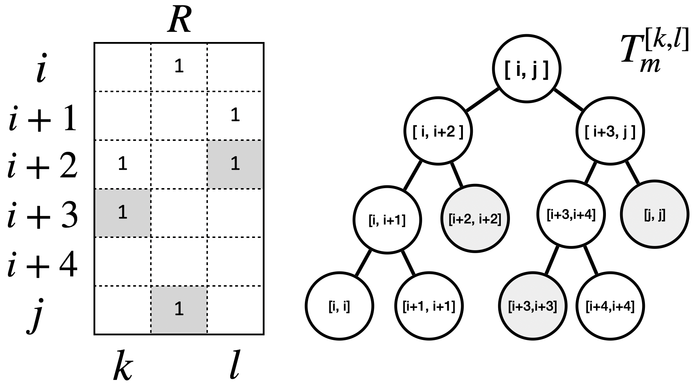Querying creators
Lemma (Chen and Kerber 2011): For any box R = [i,j] \times [k,l] \subset \Delta_+, define:
P_{R} = \{ \, (\sigma_a, \sigma_b) \in \mathrm{dgm}(K,f) : a \in [i,j], b \in [k,l] \, \}
If \mu_p^{R} = \mathrm{card}(P_{R}), then computing the creators of P_{R} has time complexity:
O((1 + \mu_p^R \log(j - i)) \mathcal{R}_d(l - i))
Proof: There are at most \mu_p^R non-zero leaf-to-root paths, each of which has length O(\log(j - i)). Since \mu(\mathcal{n}_{[a,b]}) = \mu(\mathrm{left}(\mathcal{n}_{[a,b]})) + \mu(\mathrm{right}(\mathcal{n}_{[a,b]})), we only need query one of these children to descend each path. Since we need to perform one query at the root and since the complexity of any given query is \mathcal{R}_d(l - i), the stated complexity follows.
Querying pairs
Lemma (Chen and Kerber 2011): For any box R = [i,j] \times [k,l] \subset \Delta_+, define:
P_{R} = \{ \, (\sigma_a, \sigma_b) \in \mathrm{dgm}(K,f) : a \in [i,j], b \in [k,l] \, \})
If \mu_p^{R} = \mathrm{card}(P_{R}), then computing all of the pairs P_{R} has time complexity:
O((1 + \mu_p^R \log(l - i)) \mathcal{R}_d(l - i))
Proof: Fix a creator simplex \sigma_i that has been previously found in the tree \mathcal{T}_m^{[k,l]}. By definition, \mu(n_{[i,i]}) = 1, and its destroyer is the unique integer j \in [k,l] with: \textstyle \mu_p^{i,j} = \left(\beta_p^{i,j{\small -}1} - \beta_p^{i,j} \right) - \left(\beta_p^{i{\small -}1,j{\small -}1} - \beta_p^{i{\small -}1,j} \right) = 1 which can be found via binary search on [k,l] in O(\log(l-k)\mathcal{R}_d(l-i)) time. Repeating for all creators yields the complexity in the theorem.
Querying \Gamma-pairs
Lemma (Chen and Kerber 2011): For any box R = [i,j] \times [k,l] \subset \Delta_+, define:
P(\Gamma)_{R} = \{ \, (\sigma_a, \sigma_b) \in \mathrm{dgm}(K,f) : a \in [i,j], b \in [k,l], f(\sigma_b) - f(\sigma_a) \geq \Gamma \, \}
If \mu_p^{R}(\Gamma) = \mathrm{card}(P_{R}(\Gamma)), then computing all \Gamma-pairs P_{R}(\Gamma) has time complexity:
O\left(\left( \frac{1}{\delta} + C_{(1-\delta)\Gamma} \log n \right) \mathcal{R}_d(m)\right)
where \delta \in (0,1) is an arbitrary constant and C_{(1-\delta)\Gamma} is a constant given by:
C_{(1-\delta)\Gamma} = \mu_p^{B}((1 - \delta)\Gamma), \quad B = [1,k] \times [k,m], \quad k = \lfloor m / 2 \rfloor
Note: C_{(1-\delta)\Gamma} counts the number of pairs with persistence at least \Gamma.
Querying \Gamma-pairs: proof 1
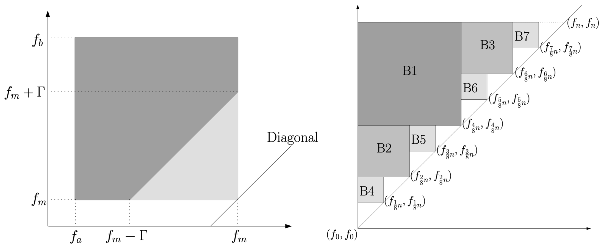- (left) Dark gray polygon contains pairs in box R \subset \Delta_+ with persistence \geq \Gamma
- (right) Pairs computed via a divide-and-conquer
Proof Sketch 1: Excluding the 1/\delta term, the main complexity follows from writing the recurrence for \mu_p^{B}(\Gamma) & applying the Master Theorem (Bentley, Haken, and Saxe 1980).
Querying \Gamma-pairs: proof 2
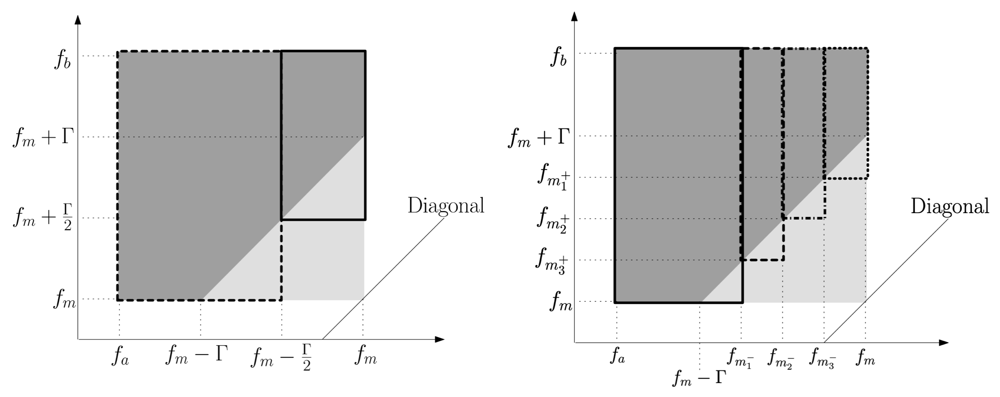- (left) Two rectangles contain pairs with persistence \Gamma, plus extra \Gamma/2 pairs
- (right) Four rectangles contain pairs with persistence \Gamma, plus extra \Gamma/4 pairs
Proof Sketch 2: The \delta \in (0,1) term comes from defining any monotone increasing sequence of subdivision points a_1, a_2, \dots, a_{t-1} with t = \lceil 1/\delta \rceil where \Gamma \cdot (1 - \frac{i}{t})
Instantiating Rank Algorithms
A variety of rank algorithms can be used for \mathbb{Z}_2 coefficients:
| Method | Rank Complexity | Persistence Computation | Type |
|---|---|---|---|
| PLU | O(n^\omega) | O(C_{(1-\delta)_\Gamma} n^{2.376} \log n) | Deterministic |
| Las-Vegas | \tilde{O}(n^{3-1/(\omega-1)}) | O(C_{(1-\delta)\Gamma} n^{2.28}) | Deterministic |
| Monte-Carlo | O(n^2 \log^2 n \log \log n) | O(C_{(1-\delta)\Gamma} n^2 \log^3 n \log \log n) | Randomized |
The algorithm can also be adapted to:
- Compute representative cycles (via solving a linear system)
- Work with generalized fields (via field extensions)
- Work with other complexes (e.g. cubical complexes)
Care must be taken to handle the randomized case
Some of my own work (Time permitting)
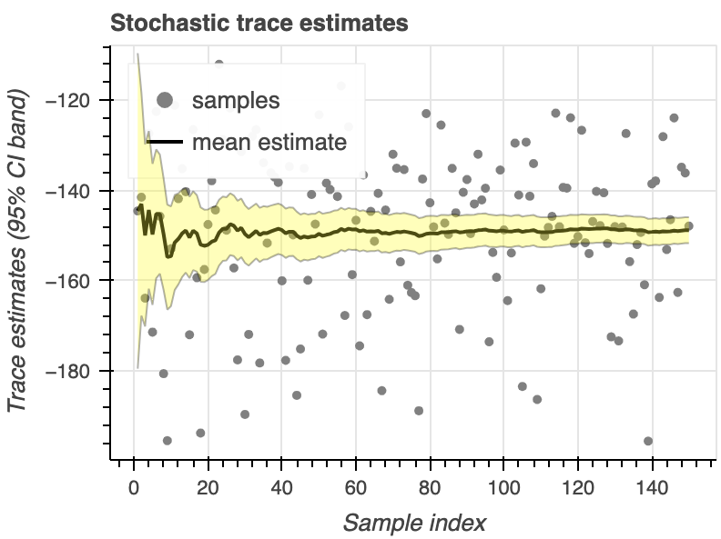

For \mathbb{F} = \mathbb{R}, this algorithm can be used to compute all persistence invariants (ranks, pairs, and repr.) in O(m) space, though there are still many barriers that affect its practical use.
Certain use-cases are near to being practical with rank-based approach, such as persistence optimization and large scale homological inference